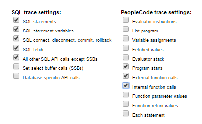
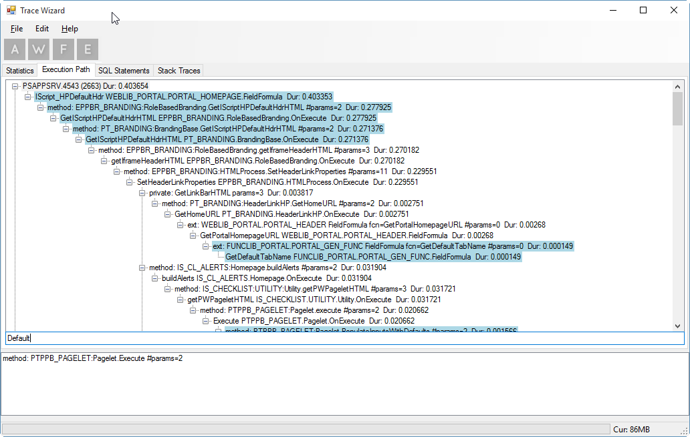
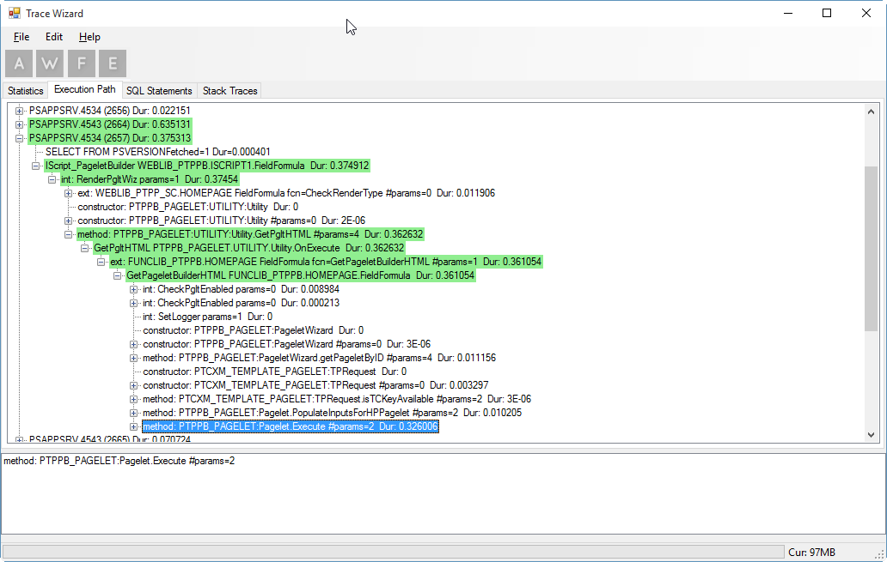
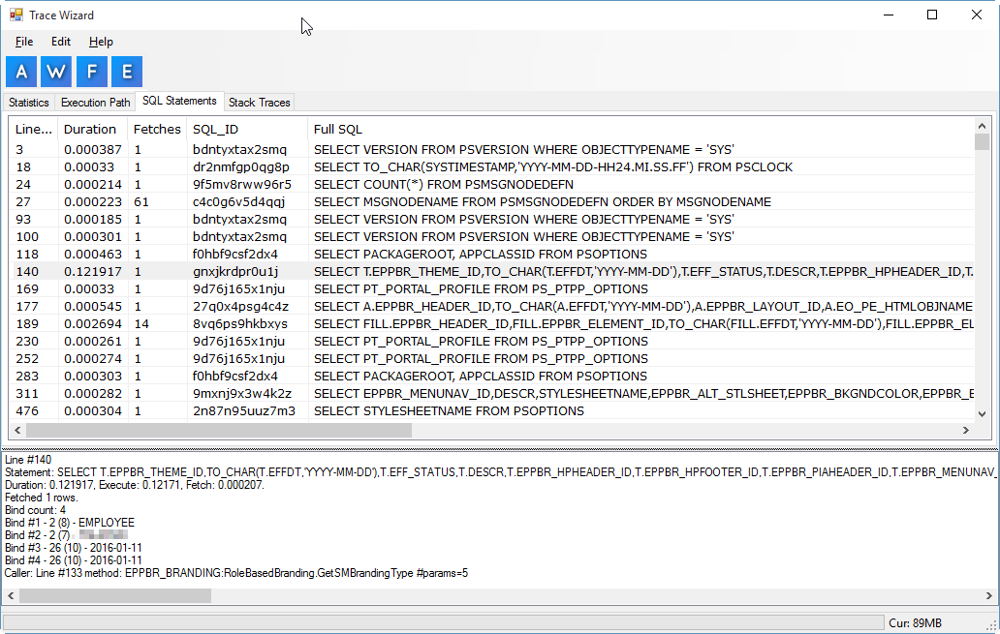
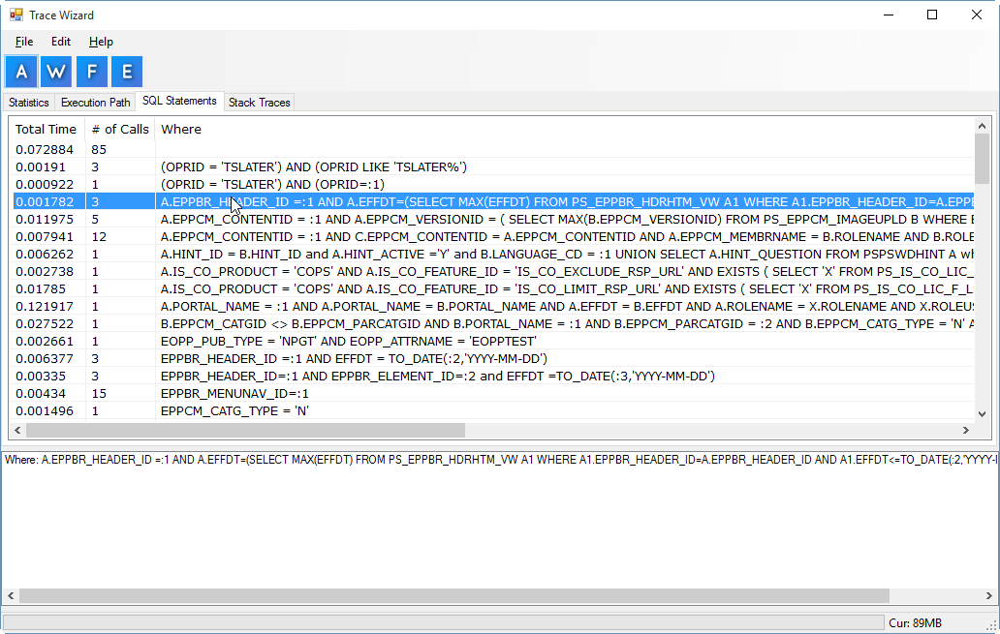
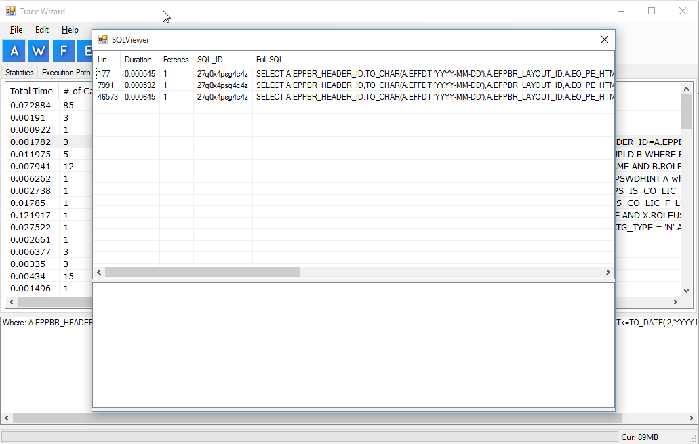
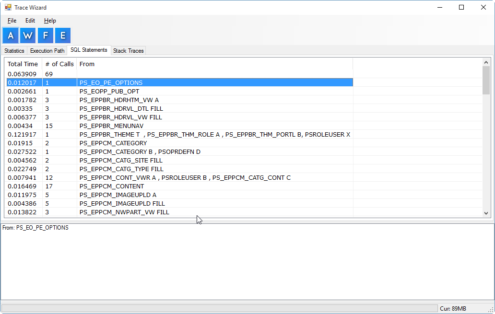

Trace Wizard
Peoplesoft TraceSQL File Analyzer
Author
Trace Wizard was written by Tim Slater from IntraSee. Tim specializes in backend technologies in the Higher Ed and Commercial space helping IntraSee deliver compelling user experiences for PeopleSoft clients.
Releases
You can get the latest releases of TraceWizard by going to the Releases Page
Purpose
Trace Wizard is a Windows Based utility that can assist in making sense of TraceSQL files.
Trace Wizard strives to provide:
- Fast processing
- Stable environment (large files shouldn't crash)
- An intuitive understanding of the execution path
- Allows easy viewing of exception/error locations
- Accurate timings throughout the execution path
- Highlights slow calls for ease of performance analysis
- Specific view for Stack Traces
- Memory monitor in bottom-right to track memory usage
Requirements
Trace Wizard requires a Windows OS and the .NET Framework (v4.5), it does not current run well under Mono.
Trace File Settings
There are certain trace settings that work best with Trace Wizard.
You should have the following boxes checked:

Execution Path
Overview
The Execution Path view allows you to see the various execution calls that occured and what peoplecode functions / sql statements were called and by whom.
Items highlighted in Yellow indicate that somewhere in their branch an exception/stack trace/sql error occured, you can follow the yellow trail(s) all the way to the red item.
Items in red indiciate that they produced an exception/stack trace/sql error, clicking on them should reveal more information in the bottom panel.
Searching
The execution path view supports searching for function names/line numbers, you can toggle the search box with Ctrl + F, you can also exit out of search with Escape.

Performance Monitoring
The Execution path is also useful for locating troublesome calls in terms of timing, if a page is slow to load, the proper tracesql and Trace Wizard should make it easy to pinpoint the functions responsible.

SQL Statements
Overview
The SQL Statements view shows every SQL Statement that was found in the trace file.
Double clicking on an SQL statement will take you to that exact SQL statement in the Execution Path tab.

ALL View
The ALL view is the default view and will show each individual SQL statement. Clicking on a statement will show you additional information about it in the lower pane including:
- The full statement
- Duration of the call
- Time to execute the call
- Time to fetch the results
- Number of rows fetched
- Number of bind variables
- Values for each bind variable.
Where View
Directly underneath the File menu, there are 3 buttons labelled A/W/F, clicking on the "A" button will reset the SQL View tab to displaying the ALL view.
The other views provided are the "WHERE and FROM" views.
The WHERE view groups the SQL statements by unique Where clause and gives aggregate counts for each group as well as total execution time.

Double clicking one of these items will bring up a pop-up window that contains all of the SQL statements in the group. The information provided on this pop-up is identical to the ALL view.

You can also double click on one of these items to be taken to that specific SQL item in the Execution Path.
From View
This view is triggered by clicking on the "F" button. It operates basically the same to the WHERE view, except it is grouping by FROM statements instead of WHERE

Searching
The SQL Statement views supports searching through the SQL Text/line numbers, you can toggle the search box with Ctrl + F, you can also exit out of search with Escape.
Stack Trace View
This view will show any stack traces that were found in the trace file, again you can click on these for more information or double click to be taken to the location in the execution path where it occurred.